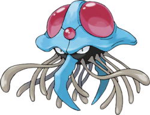

Recherche

Tentacool - 072
Nom Anglais : Menokurage
Nom Original : Zenigame, メノクラゲ
Génération : Première
Type : Eau Poison
Catégorie : Pokémon Mollusque
Sexe : Femelle : 50% | Mâle : 50%
Description : Tentacool ressemble vaguement à une méduse. Sa tête bleue en forme d'œuf retourné, qui lui sert aussi de corps, possède trois cristaux rouges : un petit sur le front, et deux grands situés plus en hauteur et sur les côtés. L'arrière de la tête est protégé par une collerette. Deux tentacules seulement sont apparents. Il est composé en très grande partie d'eau, le reste étant occupé par l'organe sécrétant les toxines.
Tentacruel - 073